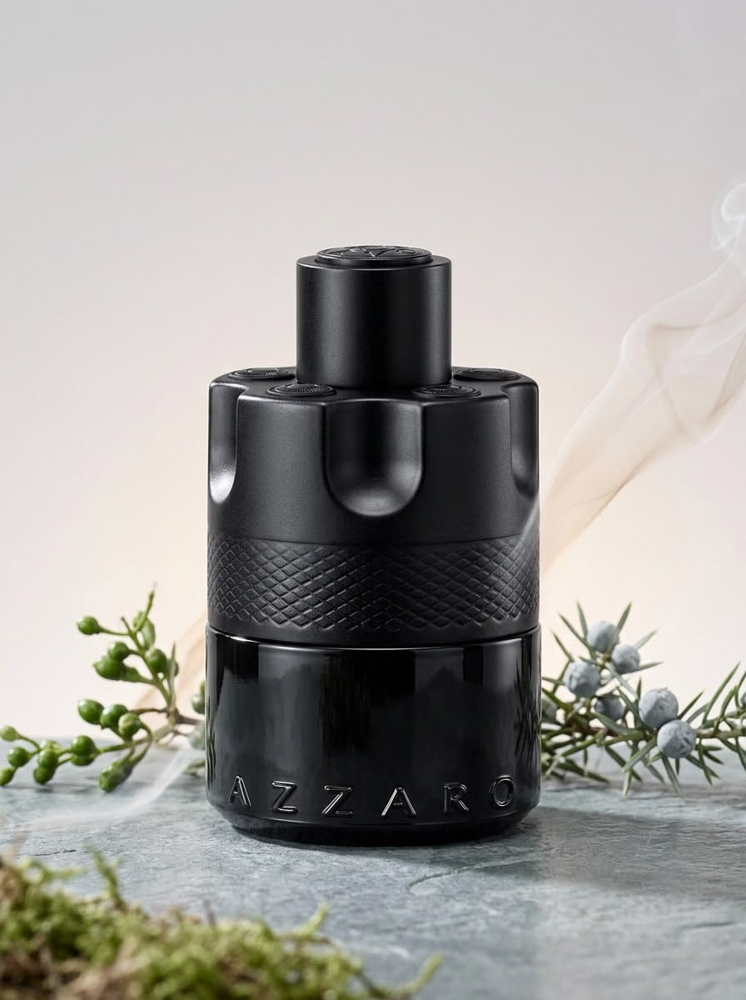

CSS Animations · Data & Hover
Numbers and hover.
Scroll for the counters, then hover or Tab through the cards below.
Numbers & data viz
Counters — 6
Scroll each card into view to trigger its count.
data-kui="count-up 1800ms to:2450"
data-kui="count-down 1800ms from:500 to:0"
data-kui="count-currency 1800ms to:4820 decimals:0"
data-kui="count-percent 1800ms to:0.94"
data-kui="count-compact 1800ms to:128400"
data-kui="odometer-roll 2000ms to:4820"
Rings, gauges & sweeps — 4
data-kui="progress-ring"
data-kui="gauge-sweep"
data-kui="donut-sweep"
data-kui="sparkline-draw"
Bars, segments & ratings — 3
data-kui="progress-bar"
data-kui="progress-segments" (staggered)
data-kui="star-rating-fill" — 70%
Hover & pointer
Buttons — 5
data-kui="lift" — hover or Tab
data-kui="lift-shadow"
data-kui="magnetic" — move close
data-kui="shine-sweep"
data-kui="split-flap"
Borders — 3
data-kui="border-draw"
data-kui="border-glow"
data-kui="beam-border"
Links — 2
Icons — 3
data-kui="icon-wiggle"
data-kui="icon-spin"
data-kui="icon-bounce"
Card tilt — 2
Move the pointer over each card, or Tab to it.

Cursor — 5
Each zone spawns its own follower — move the pointer across, or Tab in.